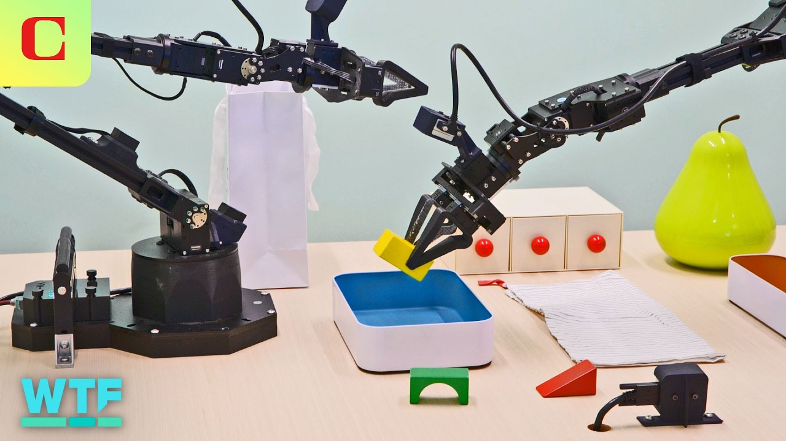

【谷歌的Gemini对机器人技术意味着什么】
Summary: Google showcased its Gemini AI in Aloha 2 robots at its recent IO developer conference, demonstrating how AI is being integrated into robots for autonomous real-world operation.
摘要： 谷歌在最近的IO开发者大会上展示了其Gemini AI在Aloha 2机器人中的应用，演示了AI如何被整合到机器人中以实现现实世界中的自主操作。

⏱️ Estimated Reading Time: 5 min
[Music] At Google's recent IO developer conference, the tech giant featured a demo of its Gemini AI in its Aloha 2 robots.
[音乐] 在谷歌最近的IO开发者大会上，这家科技巨头展示了其Gemini AI在Aloha 2机器人中的应用。
Here's the latest on how Google is getting its AI into robots and teaching them how to operate autonomously in the real world.
以下是谷歌如何将AI引入机器人并教会它们在现实世界中自主操作的最新进展。
The demo at Google IO was part of their AI sandbox and featured two pairs of Google's Aloha 2 robot arms.
谷歌IO上的演示是其AI沙盒的一部分，展示了两对谷歌的Aloha 2机械臂。
Aloha is the nickname for what developers have dubbed a quote lowcost open-source hardware system for bimmanual teley operation.
Aloha是开发者们所称的“低成本开源硬件系统”的昵称，用于双手远程操作。
Lowcost by Google robotic standards is still about $30,000 for a full tabletop robotic machine learning kit.
按照谷歌机器人标准，低成本仍然需要约3万美元购买一套完整的桌面机器人机器学习套件。
But hey, how do you even begin to put a price on building the future?
但是，嘿，你如何为构建未来定价呢？
In the demo, people were able to give the robots instructions via a microphone and the robots would perform the corresponding action or try to.
在演示中，人们可以通过麦克风向机器人发出指令，机器人会执行相应的动作或尝试执行。
This usually involved picking and placing a variety of objects and figuring out what action to take based on the sometimes imprecise prompts it was given.
这通常涉及拾取和放置各种物体，并根据有时不精确的提示决定采取什么动作。
The demos at Google IO were strikingly similar to demo videos that have been posted on Google's DeepMind YouTube channel for the past few months.
谷歌IO上的演示与过去几个月发布在谷歌DeepMind YouTube频道上的演示视频惊人地相似。
In these videos, Aloha 2 robot arms have been shown autonomously packing a lunch.
在这些视频中，Aloha 2机械臂展示了自主打包午餐的能力。
Can you put the bananas in the clear container?
你能把香蕉放进透明容器里吗？
including zipping up a plastic bag, folding a piece of paper into an origami fox, and slam dunking a mini basketball into a hoop, an action that Google DeepMind says the robot was not trained to do.
包括拉上塑料袋的拉链、将一张纸折成一只折纸狐狸，以及将迷你篮球扣入篮筐——谷歌DeepMind表示机器人并未接受过这些动作的训练。
It's also shown responding to various voice commands.
它还展示了响应各种语音命令的能力。
Can you put the highlighter away?
你能把荧光笔收起来吗？
In this desk clearing example, the speaker doesn't specify where exactly items should be put away, leaving the robot to figure it out.
在这个清理桌面的例子中，说话者并未明确指定物品应放在哪里，而是让机器人自行判断。
The person doing the demo grabs one of the erasers as he asks the robots to put them away and starts using it.
进行演示的人拿起一块橡皮擦，同时要求机器人将其收起来，并开始使用它。
Please put the erasers away.
请把橡皮擦收起来。
The robots seem to hesitate a moment before picking up the erasers that aren't in use.
机器人似乎犹豫了片刻，然后拾起未使用的橡皮擦。
This type of research and development appears to be part of a broader trend I've been hearing about from leading robotics developers, push to develop more general AI for robots.
这种研发似乎是我从领先的机器人开发者那里听到的更广泛趋势的一部分，即推动开发更通用的机器人AI。
Much thought and effort has gone into teaching robots specific tasks one at a time.
大量的思考和努力被投入到一次一个地教会机器人特定任务中。
But with several companies pushing ahead in developing multimodal AI, or AI that can process several different inputs, text, audio, video, etc. at the same time, it'll be interesting to see how these efforts at creating a more generalized AI for robotics works out.
但随着几家公司推进开发多模态AI（即能同时处理多种不同输入——文本、音频、视频等的AI），看看这些为机器人创建更通用AI的努力如何发展将会很有趣。
Now, could you spell me something that could be found in a deck of cards?
现在，你能拼出一些可以在扑克牌中找到的东西吗？
Okay, how about the word ace?
好的，“ace”这个词怎么样？
I can slide the tiles to spell it out.
我可以滑动拼块来拼出它。
Google's AI isn't limited to robotic arms.
谷歌的AI不仅限于机械臂。
The company is also working with robotics developers such as Aptronic, makers of the Apollo humanoid robot.
该公司还与机器人开发者合作，例如人形机器人Apollo的制造商Aptronic。
Can you find me some?
你能帮我找一些吗？
And while these robots are still in development, human beings ourselves can carry around AI machines in the form of glasses and of course our phones.
尽管这些机器人仍在开发中，人类自己可以以眼镜和手机的形式携带AI机器。
What do you think about AI?
你对AI有什么看法？
Are you bought into it yet, or would you rather leave that to the robots?
你已经接受它了吗，还是宁愿把它留给机器人？
Let us know down in the comments.
请在评论区告诉我们。
As always, thanks so much for watching.
一如既往，非常感谢观看。
I'm your host, Jesse Earl.
我是你们的主持人，Jesse Earl。